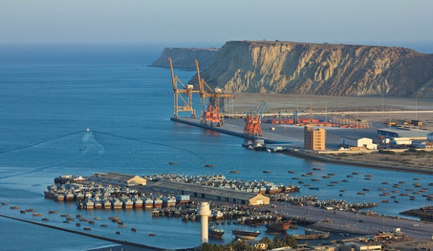
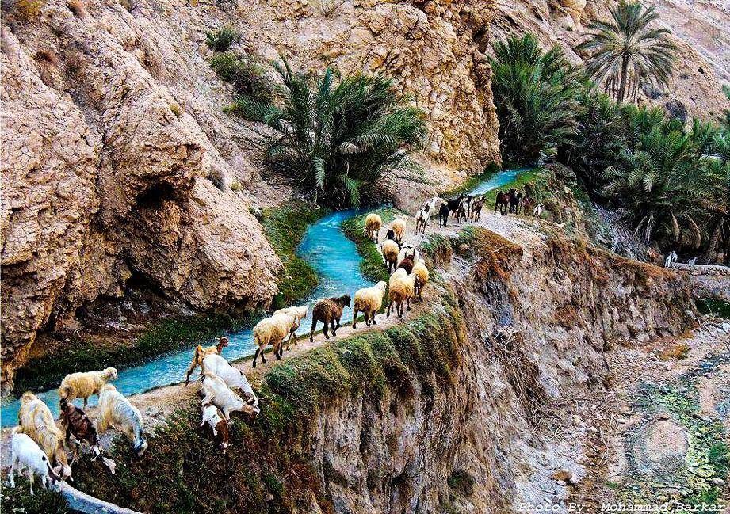
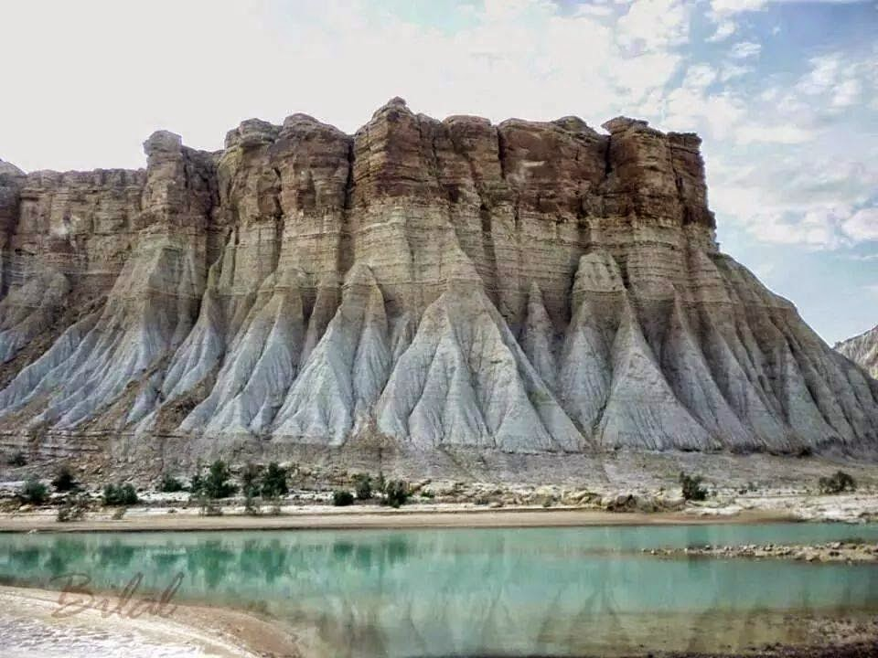
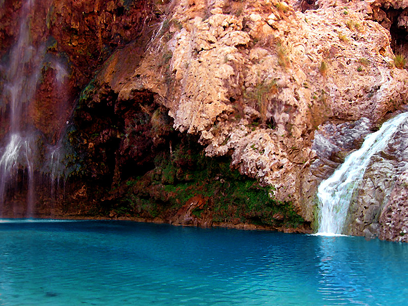

Balochistan
Balochistan is one of the four provinces of Pakistan, located in the southwestern region of the country. Its provincial capital and largest city is Quetta. It shares borders with Punjab and the Federally Administered Tribal Areas to the northeast, Sindh to the southeast, the Arabian Sea to the south, Iran to the west, and Afghanistan to the north.
54.1% of the province's inhabitants are Baloch people, 30% Pashtuns (including refugees) and 15% Brahuis, according to preliminary 2011 census. although there are smaller communities of Hazaras, Sindhis, Punjabis, and other settlers such as the Uzbeks, and Turkmens. The name Balochistan means "the land of the Baloch" in many regional languages. Although largely underdeveloped, the provincial economy is dominated by natural resources, especially its natural gas fields, which supply the entire country. Gwadar Port also plays a significant role in the economic development of the province. Balochistan is noted for its unique culture, and extremely dry desert climate. Baloch people practice Islam and are predominantly Sunni, similar to the rest of Pakistan.
Balochistan occupies the very southeastern-most portion of the Iranian Plateau, the site of the earliest known farming settlements in the pre-Indus Valley Civilization era, the earliest of which was Mehrgarh, dated at 7000 BC, located in modern-day Balochistan. Balochistan marked the westernmost extent of the Indus Valley Civilisation. Centuries before the arrival of Islam in the 7th Century, parts of Balochistan was ruled by the Paratarajas, an Indo-Scythian dynasty. At certain times, the Kushans also held political sway in parts of Balochistan.
A theory of the origin of the Baloch people, the largest ethnic group in the region, is that they are of Median descent,[4] and are a Kurdish group that has absorbed Dravidian genes and cultural traits, primarily from Brahui people. With time, Baloch tribes linguistically absorbed all the local people in Makran, southern Sistan and the Brahui country, rivaling other Iranian-speaking groups in the region in size.